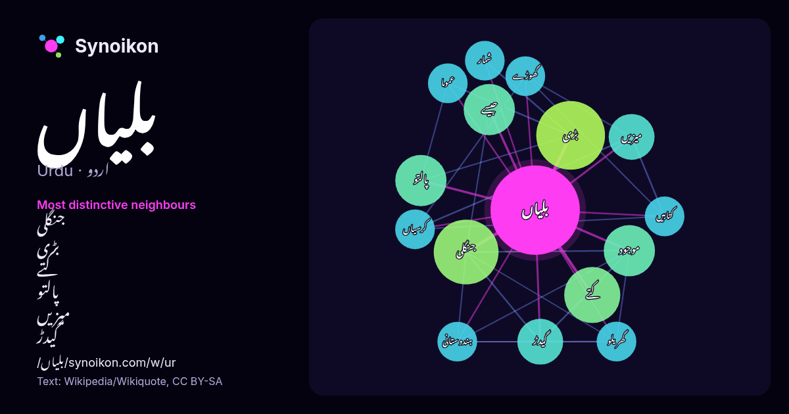

اردو · مقبول لفظ
بلیاں
“cats” · ویکیپیڈیا کے 80 استعمالات میں اس کے آس پاس ملنے والے الفاظ۔

سب سے نمایاں پڑوسی
- جنگلی 8.9×
- بڑی 8.0×
- کتے 6.9×
- پالتو 6.0×
- میزیں 5.0×
- گیدڑ 5.0×
- جیسے 4.9×
- موجود 4.5×
- کرسیاں 4.0×
- گھوڑے 3.9×
- گھریلو 3.9×
- عموما 3.8×
- کتابیں 3.8×
- ہندوستانی 3.7×
- شمار 3.6×
× = عام ویکیپیڈیا متن کے مقابلے میں کتنے گنا زیادہ۔
سب سے زیادہ آنے والے پڑوسی
- میں 15
- بڑی 9
- جنگلی 8
- کتے 6
- پالتو 5
- جیسے 5
- سے 5
- کا 5
- موجود 5
- اس 4
- کو 4
- گیدڑ 4
- میزیں 4
- ان 3
- تمام 3
- تھا 3
- سب 3
- شمار 3
- عموما 3
- کتابیں 3
سیاق میں
- رنجیت سنگھ بلیاں (انگریزی: Ranjit Singh Balian) ایک سیاست دان تھے جن کا تعلق بھارت سے تھا۔ انگریزی ویکیپیڈیا کے مشارکین (8 اگست 2026)۔ "Ranjit Singh Balian" Wikipedia snippets · رنجیت سنگھ بلیاں
- جاتا ہے۔ مزید برآں، ایک بڑی تعداد یقین رکھتی ہے کہ مسلمانوں کے درمیان میں بلیاں نمازیوں کو تلاش کرتی ہیں۔ ترکی، آیا صوفیہ کے قبرستان میں بلی ناصرالدین شاه Wikipedia snippets · اسلام اور بلیاں
- چھوٹی بلیاں شمار ہوتی ہیں۔ بڑی بلیاں جیسے ببر شیر، چیتا، تیندوا، باگ وغیرہ ہیں۔ چھوٹی بلیوں کی کئی اقسام ہیں جن میں زیادہ تر پالتو ہیں۔ بڑی بلیاں عموماً Wikipedia snippets · بلی
- (انگریزی: Meow) وہ فطری آواز ہے جو بلیاں عام طور پر نکالتی ہیں۔ یہ آواز بلیوں کی مختلف حالتوں اور جذبات کا اظہار کرتی ہے۔ بلیاں انسانوں سے توجہ حاصل کرنے، بھوک Wikipedia snippets · میاؤں
- قدیم مصر میں بلیاں "ماو" کہلاتی تھیں اور انھیں مصری معاشرے میں نہایت اہم مقام حاصل تھا۔ حالیہ جینیاتی تحقیقات کے مطابق اندازہ ہے کہ بلیوں کو پہلی مرتبہ Wikipedia snippets · قدیم مصر میں بلیاں
- نے ایک سیامی بلی تحفے کے طور پر بھی جبکہ 1884 میں امریکی کونسل جنرل نے دوسیامی بلیاں تحفے کے طور پر انگلینڈ بھیجی جس کے بعد یہ دنیا بھر میں پھیل گئیں۔ Wikipedia snippets · سیامی بلی
- شروع کیے گئے اس پروگرام کا مقصد کریملین، روس اور روسی سفارت خانوں میں ایسی بلیاں چھوڑنا تھا، جن میں جاسوسی کے آلات نصب ہوتے۔ جانوروں کے امریکی ڈاکٹر صرف Wikipedia snippets · اکیوسٹک کیٹی
- نئی طرز کے باڑے موجود ہیں۔ پرانے طرز کے پنجروں میں گھریلو بلیاں، گیدڑ، ہندوستانی جنگلی بلیاں موجود ہیں جبکہ مگر مچھوں کو جدید طرز کے باڑوں میں رکھا گیا Wikipedia snippets · بہاولپور چڑیا گھر
مزید الفاظ
2026-10-09 کو طے شدہ ترتیبات (±5 الفاظ، درمیانہ کارپس) کے ساتھ پہلے سے شمار کیا گیا۔ انٹرایکٹو نقشہ اسے لائیو ڈیٹا سے تازہ کر سکتا ہے۔
مشینی ترجمہ شدہ انٹرفیس؛ اصلاحات کا خیرمقدم ہے۔